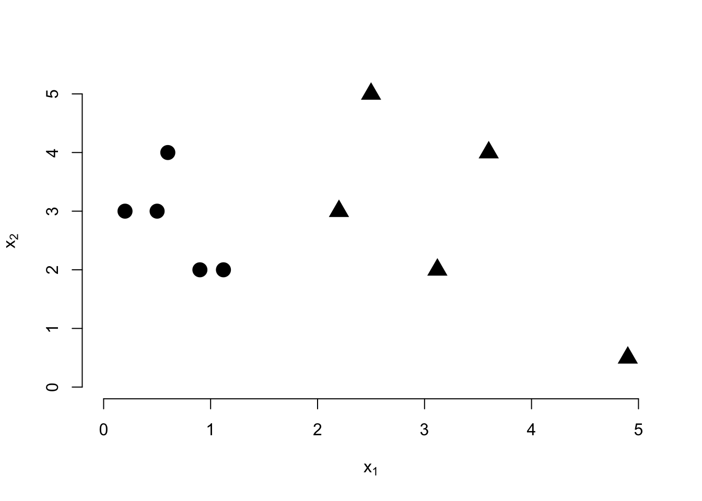
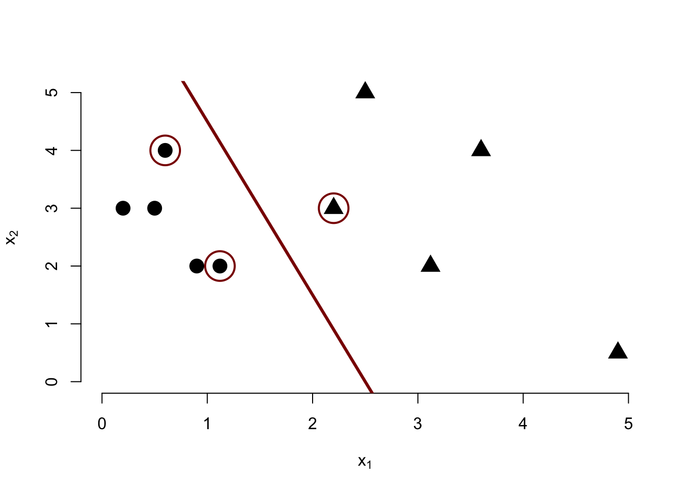

STA 9890 - Spring 2025 Test 2: Classification and Ensemble Methods
The original test booklet can be found here. \[\newcommand{\bX}{\mathbf{X}}\newcommand{\by}{\mathbf{y}}\newcommand{\bx}{\mathbf{x}}\newcommand{\R}{\mathbb{R}}\newcommand{\bbeta}{\mathbf{\beta}}\newcommand{\argmin}{\text{arg min}}\newcommand{\bD}{\mathbf{D}}\newcommand{\bzero}{\mathbf{0}}\newcommand{\bI}{\mathbf{I}}\newcommand{\bz}{\mathbf{z}} \newcommand{\P}{\mathbb{P}}\]
In classification, a false negative refers to an observation which is in the negative (0) class, but is falsely predicted as a positive (1) instead.
Solution
False - this is a false positive. Because we predict a positive label, this scenario describes a positive; because our prediction is wrong, this scenario describes a positive.
Boosting is the practice of building an ensemble by sub-sampling features.
Solution
False. Boosting is iterative refinement of a predictor (see below). Feature sub-sampling does not have a universal name, though it is sometimes called the random subspace method.
Under a suitable generative model, logistic regression is BLUE.
Solution
False. Logistic regression is not a linear estimator (hence the need for iterative solvers) nor is it unbiased. To wit,
beta <-c(1, 2, 3)rowMeans(replicate(5000, { X <-matrix(rnorm(50*3), nrow=50) eta <- X %*% beta mu <-1/(1+exp(-eta)) y <-rbinom(50, size=1, prob=mu)coef(glm(y ~ X +0, family=binomial))}))
X1 X2 X3
2.874551 5.236023 7.862089
Poisson or log-linear regression is suitable for predicting count-valued responses, such as the number of goals scored in a soccer match.
Solution
True. Poisson random variables are often used to model small counts, such as the number of goals scored, and so log-linear regression is a good choice. Note, however, that the margin of victory (the difference in scores) does not follow a Poisson distribution (since it can be negative if the other team wins) and a Skellam distribution must be used instead.
Which of the following are properties of support vector classifiers?
Solution
Use of Hinge Loss ✅
Automatic Identification of Kernel Points
Lack of Tuning Parameters
Probabilistic Output
Insensitivity to training data far from the margin ✅
Which of the following are discriminative classifiers?
Solution
LDA
SVM ✅
Random Forest ✅
Decision Trees ✅
Boosting
QDA
Bagging
A maximum likelihood estimator is one which sets the unknown parameters in order to maximize the negative log PDF/PMF of the sampling distribution on the observed data.
Solution
False. The maximum likelihood estimator is obtained by maximizing the likelihood or equivalently minimizing the negative logarithm of the likelihood.
Multiple Choice: Which of the following ARE NOT convex approximations to 0/1 Accuracy loss in classification?
Solution
Hinge Loss
Smoothed Hinge Loss
Gini Coefficient ✅
False Negative Rate ✅
Binomial Deviance Loss
Tree Loss ✅
The main purpose of boosting is to iteratively refine our predictor by compensating for previous prediction errors.
Solution
True.
We cannot use cross-validation to tune the regularization parameter
(\(\lambda\)) of logistic ridge regression for maximum 0/1-Accuracy because the 0/1-Accuracy loss function is nonconvex.
Solution
False. We can use CV to optimize accuracy. Convexity comes in to play in the tuning procedure (because it requires search over a high-dimensional parameter space) and typically requires us to use a surrogate loss.
Short Answer (40 points - 8 questions at 5 points each)
Apple devices support FaceID as an alternative to traditional password-based authentication. (In this context a ‘positive’ refers to an authorized user.) Label each of the following scenarios as a false positive (FP), false negative (FN), true positive (TP), or true negative (TN).
Solution
TP: I am able to successfully authenticate on my phone.
FN: My phone refuses to authenticate me because I just woke up and my hair is a mess (`bed head’).
FP: My phone is stolen by my evil twin who is then able to access it because his face matches mine.
TN: My phone cannot be accessed by my kids when they take it without permission.
TP: My wife is added as a second user profile on my phone and she is able to use it to check my emails for me while I am driving.
Given a binary classifier, how can you use it to perform to multi-class classification? (Hint: “One- vs-rest” approaches may be easier to describe.)
Things to mention include (but aren’t limited to):
Training \(K\) different classifiers, each using the whole data set
Repeatedly changing the target variable to an indicator for a single class
Prediction by taking the ‘most likely’ class
A bit more interpretable
A bit faster than alternatives
Compare and contrast bagging and stacking. Give at least 2 similarities and two differences.
Solution
Possible similarities include:
Ensemble learning
Can use arbitrary base learners
Parallelizable
Aim for variance reduction, not bias mitigation
Possible differences include:
Stacking uses different base learners, while bagging reuses one family
Bagging has resampling involved
Stacking requires fitting a second set of weights, and hence an additional data split
Describe the three parts of a generalized linear model, noting their general role in GLM specification and precisely identifying in logistic regression:
Solution
The parts of a GLM are:
The linear predictor
Purpose: Estimates (a transform of) the conditional mean using a linear combination of features. Can be replaced by splines or kernel if appropriate to the problem.
Logistic Regression: Standard (\(\bX\bbeta\))
The sampling distribution
Purpose: Generative model for the observed \(y_i\). Varied to make data type fit distribution
Logistic Regression: Bernoulli
Mapping (or inverse link)
Purpose: Maps the domain of the linear predictor (\(\R\)) to a suitable set of values that can be the mean of the sampling distribution
Logistic Regression: \(f(z) = 1/(1+e^{-z}) = e^z/(1+e^z) = \text{softmax}(1, z)\) which is known as the logistic function
Given the following data, draw the decision boundary estimated by a maximum margin classifier and mark the support points by circling them.

Solution
Something like this:

Given the following set of classification outcomes, compute the Folwkes-Mallows (FM) Index:
Ground Truth
+
-
Prediction
+
50
10
-
10
Recall that \[\text{FM} = \sqrt{\text{PPV} \times \text{TPR}}
\text{ where } \text{PPV} = 1 - \text{FDR} = \frac{\text{TP}}{\text{TP} + \text{FP}}
\text{ and } \text{TPR} = \frac{\text{TP}}{\text{TP} + \text{FN}}\]
Give an example of an ordinal classification problem and explain in a concrete problem-specific sense why it cannot be approached as a binary or multiclass classification problem (i.e., your answer needs to be more substantial than “because it is ordinal.”).
Solution
Many possible solutions. Key things to highlight are ordered, but non-numeric, categories (e.g., user ratings or survey responses). Non-additivity of response.
Compare and contrast Naive Bayes and Quadratic Discriminant Analysis. Give at least 2 similarities and two differences.
Solution
Possible Similarities:
Generative classifiers
Based on multivariate normal distribution
Both require estimating class means
Possible Differences:
NB is better for high-dim, QDA for low-dim
NB has a linear decision boundary (linear method) while QDA has a parabolic boundary
Difference covariance assumptions
Mathematics of Machine Learning (30 points total)
In this section, you will develop your own multinomial generative classifier to determine whether a given email is valid (“ham”) or spam.
Before we get into the mathematics, recall that a multinomial distribution is a generalization of the binomial distribution (with a categorical sampling scheme replacing the Bernoulli). Specifically, a \(K\)-class multinomial is characterized by a sample size \(n \in \mathbb{N}\) and a probability vector \(\mathbf{p}=(p_1, p_2, \dots p_K)\) where \(\sum_i p_i = 1\) and all \(p_i \geq 0\). The PMF of an observation is then given by \[\mathbb{P}(\mathbf{X} = \mathbf{x}) = \mathbb{P}(X_1 = x_1, X_2 = x_2, \dots, X_K=x_K) = \frac{n!}{x_1!x_2!\dots x_K!}p_1^{x_1}p_2^{x_2}\dots p_K^{x_K}\] where \((x_1, x_2, \dots, x_K)\) are the number of observations in each category.
For example, if a \(3\)-class multinomial has probability parameters \((0.5, 0.25, 0.25)\) and we observe \((3, 1, 1)\), the PMF of that observation is: \[\frac{5!}{3!1!1!}0.5^30.25^10.25^1 = \frac{120}{6 * 1 * 1}(0.125)(0.25)(0.25) = 0.15625.\]
You want to use a multinomial generative classifier to distinguish emails based on certain words. After discussion with your IT department, you have collected a series of valid and spam emails and found that they contain the following word counts:
Word
Valid
Spam
Deal
20
80
Double
10
100
Money
80
100
Free
20
100
Spreadsheet
20
5
Revenue
40
12
Classifier
10
3
(Emails may contain other words, but you do not include them in your model.)
In this context, we are using a bag of words approach, where the only thing that matters is the counts of various words, not the order in which they appear or any other words not on our list.
You also know that your company’s domain receives nine times as many spam messages as valid ones.
Given the above information, what should your prior probabilities be for \(\P(\text{Valid})\) and \(\P(\text{Spam}) = 1 - \P(\text{Valid})\)? (3 points)
Solution
We can simply read the priors off the given information:
In order to calibrate the decision boundary for your classifiers, you perform a user experience study that reveals it takes 2 minutes on average to discard a spam email, while it takes 10 minutes to find an improperly labeled valid email and move it to the inbox.
What posterior probability threshold should you select in order to minimize the expected amount of wasted time?(Find \(p_{\text{thresh}}\) such that if the posterior probability of being spam is greater than \(p_{\text{thresh}}\), the optimal choice is to treat the email as spam.)
Hint: When the posterior probability is equal to the threshold, the expected time loss of both decisions is equal. (5 points)
Solution
The decision boundary should be set so that both decisions (spam / valid) have the same expected time loss. If we let \(p\) be the threshold probability, then labeling the email as spam has an expected time loss of \(10(1-p)\) and labeling the email as valid has an expected time loss of \(2p\). We can equate these to find
Your classifier receives a new message with the text:
Hello Friend!
I have a great deal for you - if you send me $100 today, I will double your money and send you $200 dollars next week. That is $100 absolutely free!!
How am I able to offer such an amazing deal? I have a system for investing in the markets. I can study price patterns and identify stocks that are going up and ride them to the moon! No spreadsheet needed - just pure skill.
I’m offering you this opportunity to double your money because I believe that this path to properity should be free to all. We don’t need any fancy banks with their lies - power to the people!
A. What is the data vector \((\bx)\) associated with the above text? (5 points)
Solution
We count up the words in the above text (keeping the same order as earlier) to get
\[\bx = (2, 2, 2, 2, 1, 0, 0)\]
B. What is the PMF of each class associated with this data vector? (5 points)
Solution
We substitute our observed values into the multinomial PMF given above: